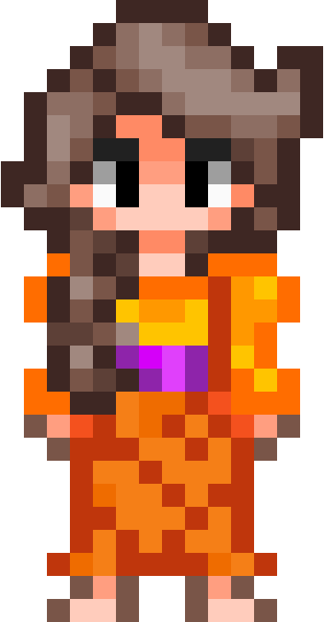

Tentang Tic-Tac-Mas


Tic-Tac-Mas (Tic-Tac-Toe Timun Mas) merupakan permainan yang dikembangkan oleh Darin Amanda Zakiya, Muhammad Fachry Nataprawira, Muhammad Nadhirsyah Indra, dan Roshani Ayu Pranasti sebagai proyek akhir mata kuliah Sistem Cerdas, Fakultas Ilmu Komputer, Universitas Indonesia, Semester Gasal 2019/2020.
Permainan ini merupakan permainan Tic-Tac-Toe yang terinspirasi dari cerita rakyat Jawa Tengah yang berjudul Timun Mas. Timun Mas sendiri menceritakan kisah seorang gadis yang mencoba untuk bertahan dan melarikan diri dari raksasa hijau jahat yang mencoba untuk menangkap dan memakannya. Klik tombol di bawah untuk membaca cerita lengkap Timun Mas!